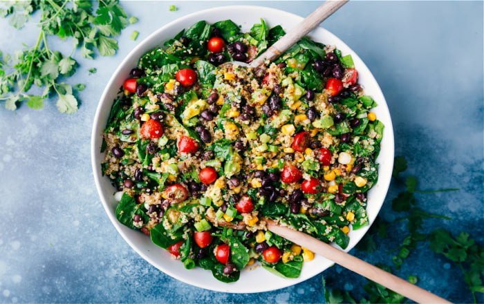

Ingredients
- 1 cup quinoa
- 2 cups water or vegetable broth
- 1 cup cherry tomatoes, halved
- 1 cucumber, diced
- 1 red bell pepper, diced
- 1 yellow bell pepper, diced
- 1 small red onion, finely chopped
- 1/2 cup grated carrots
- 1/4 cup chopped fresh parsley
- 1/4 cup chopped fresh cilantro
- 1 avocado, diced
- 1/4 cup crumbled feta cheese (optional)
- 1/4 cup sunflower seeds or pumpkin seeds (optional)
- 1/4 cup extra-virgin olive oil
- 2 tablespoons lemon juice (or more to taste)
- 1 tablespoon apple cider vinegar
- 1 clove garlic, minced
- 1 teaspoon Dijon mustard
- Salt and pepper to taste
Nutritional Information
- Calories: 350 kcal
- Total Fat: 20g
- Saturated Fat: 3g
-
Cholesterol: 0mg (if feta cheese is omitted; about 10mg with feta
cheese)
- Sodium: 200mg
- Total Carbohydrates: 36g
- Dietary Fiber: 8g
- Sugars: 5g
- Protein: 8g
Steps
- Rinse the quinoa under cold water.
-
In a medium saucepan, combine the quinoa and water (or vegetable
broth).
-
Bring to a boil, then reduce the heat to low, cover, and simmer for
about 15 minutes or until the quinoa is tender and the liquid is
absorbed.
- Remove from heat and let it cool.
-
While the quinoa is cooking, chop the cherry tomatoes, cucumber, bell
peppers, red onion, and grate the carrots.
-
In a small bowl, whisk together the olive oil, lemon juice, apple
cider vinegar, minced garlic, Dijon mustard, salt, and pepper.
-
In a large bowl, combine the cooked quinoa, cherry tomatoes, cucumber,
bell peppers, red onion, grated carrots, parsley, cilantro, and
avocado.
- Pour the dressing over the salad and toss to combine.
-
Add the crumbled feta cheese and sunflower or pumpkin seeds if
desired.
-
Serve the salad immediately or refrigerate for an hour to let the
flavors meld together.